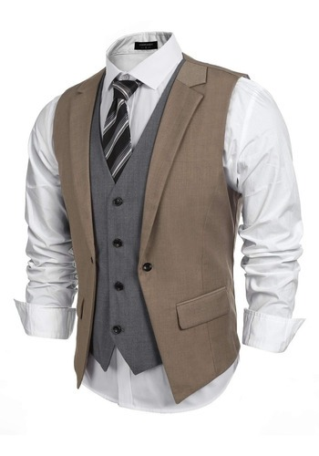
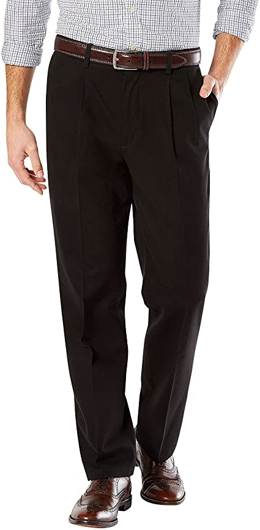
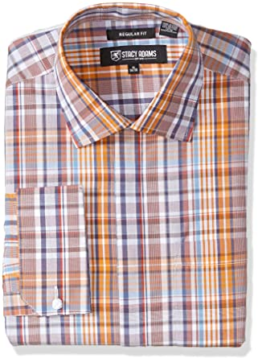

Conjunto de elegante traje de 3 piezas para hombre, con blazer de un solo botón, chaleco y pantalón, elegante, liso, ajustado
3 Piece Suit Material:Cotton Polyester Blended.
Cierre de Button.
Características: Cierre de un botón, pecho único, solapa de muesca, ventilación lateral, estilo ajustado; chaleco: cuatro botones, cuello en V, espalda suave y tirante trasero ajustable; pantalones: parte delantera plana, cierre de cremallera, extremo de botón y cintura ajustable.
Instrucciones de cuidado: se recomienda lavar en seco si las condiciones lo permiten, si tienes que lavarlo a mano, por favor, mantén la temperatura del agua por debajo de 40 grados y lávalo suavemente. Planchar al vapor, colgar el traje en las perchas cuando no las estés usando.
Ocasiones: fácil de combinar con cualquier camisa de esmoquin formal/de negocios en bodas/fiesta/negocio/graduación/fecha/trabajo/reunión/baile, buen regalo para tu amigo, padre, hermano e hijo.
Adecuado para tu estilo: este juego de traje de boda es con corte de corte delgado de drapeado 3D.
Este traje es un poco más ajustado que los trajes normales. Pero será más fácil de presentar tu figura perfecta. Y gracias a nuestra sugerencia de tamaño preciso y respuesta al servicio de atención al cliente oportuno, te convertirás en el foco de la ocasión durante todo el día al usarlo.

Chaleco formal en capas, para hombre
Algodón BLEND.
Cierre de Button.
Para aspecto formales destacados: Chaleco de dos tonos para hombre de Coofandy con doble capa, 4 botones y 2 bolsillos de ribete en la cintura, acabado con espalda ajustable para personalizar su ajuste. Completa fácilmente tus trajes de tres piezas.
Pieza atemporal de ropa para hombre: Tejido de alta calidad, artesanía exigente y estilo atemporal, Coofandy destila todo ese conocimiento de confección en diseños, haciendo que este chaleco de traje de moda sea elegante y bien ajustado en cualquier momento.
No solo para la temporada de bodas: Los chalecos son siempre una manera increíble de añadir un elemento de clase y estilo a cualquier atuendo que puedas usar.
Experimenta con diferentes combinaciones.
No tengas miedo de divertirte con un traje de vestir, perfecto para trabajar, citas, reunirte, fiesta, cena, baile y baile de graduación.
Guía de estilo: Mantén los pantalones a juego con el chaleco para que sea bastante formal. O chinos como una alternativa casual, ya que todavía tienen algo de estructura y patrimonio formal.
Para una combinación de chaleco y jeans, asegúrate de que estás trabajando con una pieza ajustada. Opta por zapatos delgados para lograr un acabado limpio.

Pantalones caquis masculinos de ajuste clásico - plisados
Algodón BLEND.
Cierre de Button.
64% algodón, 34% poliéster, 2% elastano.
Importado.
Lavar a máquina.
Ajuste cómodo en fondillos y muslo, a la cintura, con pierna recta.
Elasticidad funcional.
Cuenta con bolsillos de mano laterales y bolsillos traseros con ribete y botón.
Suave al tacto.
Cierre frontal abotonado.

Camisa de vestir para hombre a cuadros de ajuste regular francés
60 % Algodón, 40 % Poliéster.
Importado.
Cierre de Button.
Lavar a máquina.
Estilo clásico: camisa de vestir con cuello redondo a cuadros con lazos de nudo de seda o puños de botón regulares.
Grande y alto: disponible en tamaños regulares y grandes y altos.
Comodidad: tecnología de gestión de refrigeración para mayor comodidad y transpirabilidad durante todo el día.
Durabilidad: tecnología de hilo resistente y solapa oculta de doble capa de botones de sujeción de tela y ojales.
Ajuste perfecto: punta de ajuste – si entre los tamaños de brazo para mayor tamaño.
Regresar
.jpeg)